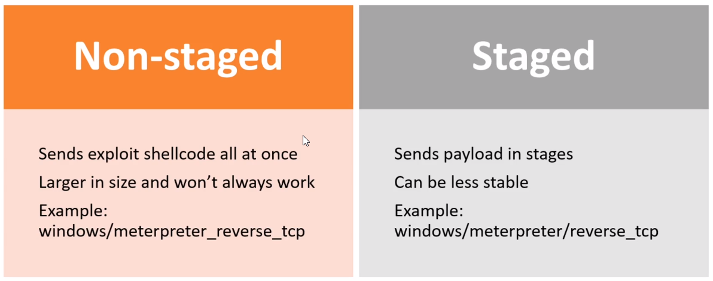

as names
staged payload : this payload works in stages . after completion of one stage next stage is performed
non staged payload : this is one and whole payload , this is not divided in parts .

if staged payload not work for an exploit then we can try non staged payload and vice versa
we can perform exlpoit by both type of payload